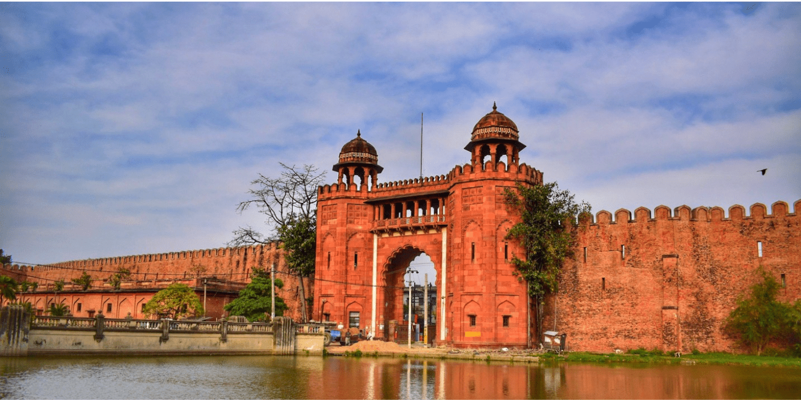

Top Attractions at Dharbhanga Darbar
Royal Architecture
The **Dharbhanga Darbar** is known for its majestic architecture, which combines **Mughal**, **Rajput**, and **Colonial** styles. The intricate carvings and majestic arches are testimony to the royal aesthetics of that era.
Royal Gardens and Courtyards

The palace grounds include beautifully maintained gardens and courtyards. These serene spaces were once used for royal gatherings and festivities.
Cultural Heritage
Dharbhanga Darbar played a vital role in promoting local culture. The palace hosted many cultural events, music, and dance performances, leaving behind a rich legacy of art and traditions in the region.